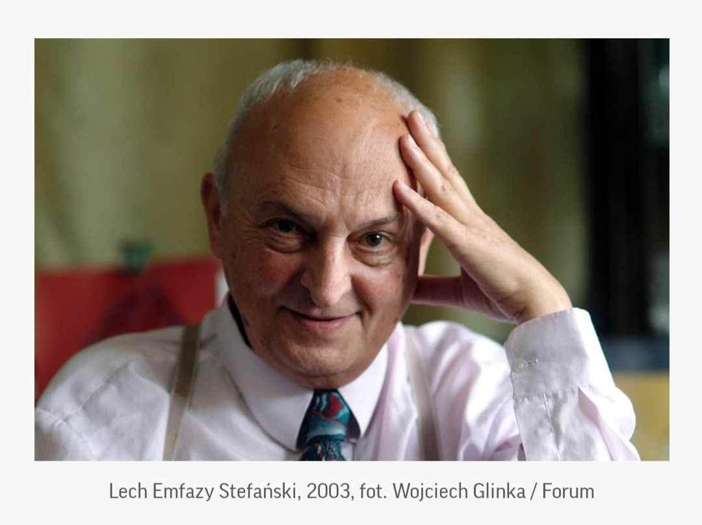
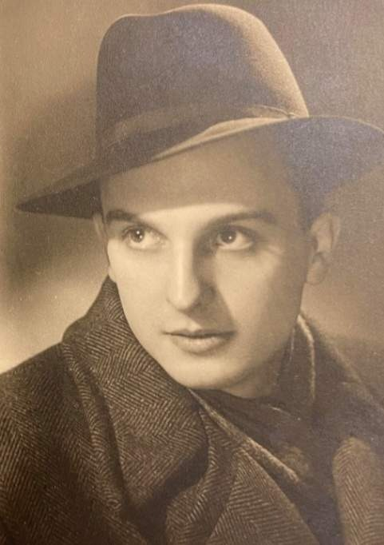
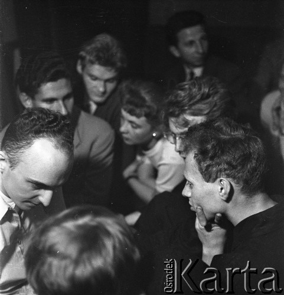
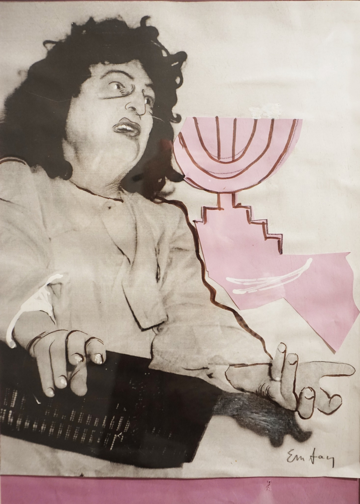
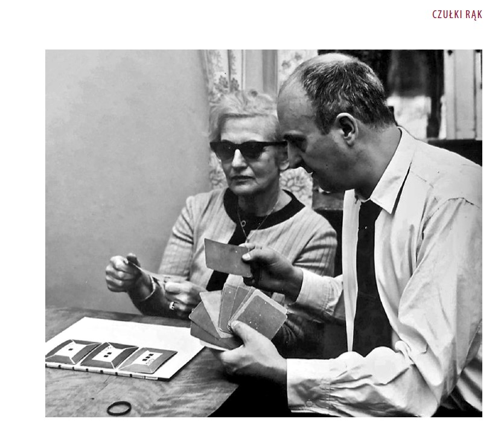
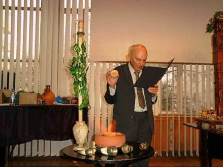
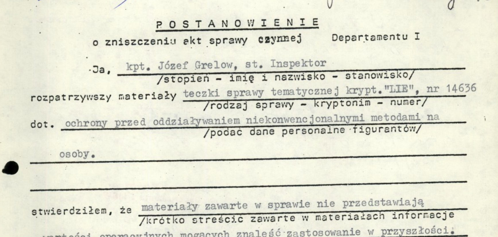
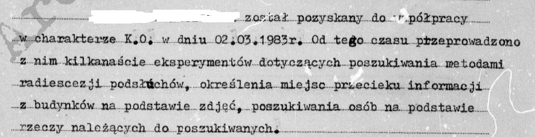

Emfazy
„Łowca dziwności"
Dziecko, które zobaczyło telewizję zanim świat spłonął, dorasta by udowodnić, że magia jest nauką — i za to płaci wszystkim, co kocha.
Wesprzyj projekt →Opowieść, która znika z archiwów
Emfazy to film dokumentalny o Lechu Emfazym Stefańskim (1928–2010) — artyście awangardowym, powstańcu warszawskim, pionierze polskiej telewizji i ojcu psychotroniki. Człowieku, którego dzieła systematycznie znikały z państwowych archiwów.
Materiał archiwalny
Filmy i fotografie z Teatru na Tarczyńskiej (kolekcja Ireny Jarosińskiej), nagrania z sesji parapsychologicznych, fragmenty filmów z udziałem Emfazego, kroniki filmowe, programy TV.
Animacja
Inspirowana estetyką „teatru rąk i przedmiotów" Teatru na Tarczyńskiej — formalna transpozycja twórczości Białoszewski-Stefański-Choiński na medium filmowe. Mini-sesje: seans hipnotyczny, Dziady, wywoływanie ducha.
Wywiady
Rozmowy z przyjaciółmi, świadkami i współpracownikami — z drogi teatralnej i z czasów badań paranormalnych. Ścieżka muzyczna: opera Prószyńskiego, Honegger, Strawiński, Krenek, Hába.
Lech Emfazy Stefański

Powstaniec i artysta
Urodzony w 1928 w Warszawie. W 1939, mając 11 lat, zobaczył działający telewizor na wystawie radiowej — przełomowy moment. Jako żołnierz AK walczył w Powstaniu Warszawskim, gdzie przyjął pseudonim „Emfazy".
W 1954 współtworzył z Mironem Białoszewskim słynny Teatr na Tarczyńskiej — awangardową scenę w prywatnym mieszkaniu, która przyciągała ministrów i dyplomatów. Premiera Homunculusa odbyła się na scenie ze skrzynki po bananach.
Pionier telewizji
W 1958 stworzył Biały Pył — pierwszy polski serial telewizyjny. Wszystkie sześć odcinków zniknęło z archiwów państwowych. Ukończył reżyserię w PWST u Bardiniego, objął kierownictwo Teatru Muzycznego TV.
Ojciec psychotroniki
Prezes Polskiego Towarzystwa Psychotronicznego z 24 oddziałami. Prowadził eksperymenty dermooptyczne z córką Bogną. Zwerbowany przez SB jako agent „Zygmuntowicz" — genialnie outmanewrował oficerów, używając ich jako bezpłatnych tłumaczy korespondencji naukowej.
Wiele razy wspominał, że najlepszym hipnotyzerem w Polsce był Gustaw Holoubek…
— z relacji Jana GondowiczaNapięcia dramatyczne
Pięć fundamentalnych konfliktów, które napędzają film:
Naukowiec vs. Mag Ojciec vs. Eksperymentator Artysta vs. System Racjonalizm vs. Irracjonalizm Pamięć vs. WymazywaniePięć podejść narracyjnych
Każde podejście odsłania inny aspekt Stefańskiego. Finalny film łączy elementy wszystkich pięciu w hybrydową strukturę.
Łowca Dziwności
Liniowa chronologia z wizualnym językiem ewoluującym od czarno-białego do eterycznej translucencji. Ton: Werner Herzog spotyka Tarkowskiego.
Czerwony Atrament
Nieliniowa spirala wokół motywu „wymazywania". Geniusz kasowany z historii trzykrotnie. Ton: kafkowski thriller à la Życie innych.
Bogna
Podwójna oś czasu: życie Bogny przeplatane z karierą ojca. Ojciec widzący niewidzialne jest ślepy na to, co robi córce.
Agent Zygmuntowicz
Tight thriller 1975–1989. Tajna policja werbuje jasnowidza, on zamienia ich w asystentów naukowych. Najwyższy potencjał komercyjny.
Eksterioryzacja
Odwrócona chronologia: od śmierci podczas zaćmienia do wystawy TV w 1939. Termowizja, fotografia UV, wizualizacje EEG.
Kto robi ten film
Z czym pracujemy
Wybrane materiały z archiwum projektu — fotografie, dokumenty SB, zapisy sesji psychotronicznych.







Pomóż opowiedzieć tę historię
Historia Stefańskiego znika z archiwów od 70 lat. Ten film to szansa, by ją utrwalić — zanim będzie za późno.
Czego szukamy
- Finansowanie produkcji i postprodukcji
- Dostęp do materiałów archiwalnych (IPN, TVP, kolekcje prywatne)
- Kontakty z festiwalami i dystrybutorami
- Animator/ka do sekwencji inspirowanych Teatrem na Tarczyńskiej
- Wsparcie w licencjonowaniu muzyki (Honegger, Strawiński, Krenek)
Dlaczego teraz
Świadkowie odchodzą. Materiały archiwalne giną lub ulegają degradacji. Każdy rok opóźnienia oznacza bezpowrotną utratę głosów ludzi, którzy znali Stefańskiego osobiście.
Co oferujemy
- Umieszczenie w czołówce jako sponsor / producent wykonawczy
- Dostęp do materiałów badawczych i konsultacje z zespołem
- Pokazy zamknięte dla sponsorów przed premierą
- Udział w strategii festiwalowej i dystrybucyjnej